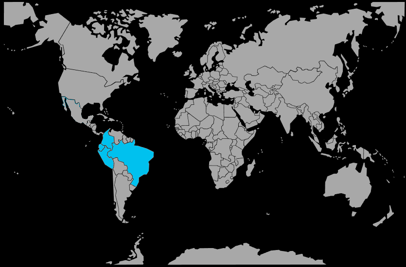

Systématique
- Ordre : Gymnotiformes
- Famille : Apteronotidae
- Genre : Apteronotus
- Espèce : Apteronotus albifrons
Apteronotus albifrons est un poisson-couteau électrique sud‑américain au corps noir allongé, atteignant 40 à 50 cm en aquarium, parfois davantage dans la nature.
Son corps comprimé latéralement et sa nageoire anale ondulante continue lui permettent de se déplacer avec élégance vers l'avant et l'arrière, principalement la nuit.
C'est une espèce nocturne et timide qui se cache sous les racines et dans les grottes durant la journée, devenant active après l'extinction de l'éclairage.
Bien que généralement pacifique avec les poissons de grande taille, il peut se montrer territorial avec ses congénères et prédateur envers les petits poissons qu'il peut avaler; un bac spacieux et bien structuré est indispensable.
Mode : la reproduction en aquarium est très rare et peu documentée; dans la nature, l'espèce pond probablement en eau libre, les œufs et larves dérivant avec le courant.
Aucun protocole de reproduction fiable n'est connu pour l'aquariophilie amateur, et l'espèce reste essentiellement capturée dans la nature.
Dimorphisme sexuel : très peu marqué en aquarium; les différences entre mâles et femelles ne sont pas facilement observables sans dissection.
Espérance de vie : environ 10 ans ou plus en captivité dans de bonnes conditions, avec un aquarium de grand volume et une nourriture adaptée.
L'espèce fréquente les eaux calmes et ombragées des rivières, bras morts et zones inondées, où elle se cache parmi les racines, branches immergées et végétation dense durant le jour.
Répartition
Origine naturelle :
- Bassin de l'Amazone au Pérou, au Brésil, en Colombie, au Venezuela et en Équateur.
- Bassin du Paraná en Argentine et au Paraguay.
- Affluents des grands fleuves et zones inondées de forêts tropicales.
L'espèce est largement distribuée en Amérique du Sud tropicale, dans une grande variété de systèmes fluviaux, des eaux noires aux eaux blanches.
Paramètres de maintenance
Température : 23 à 28 °C.
pH : 6,0 à 7,5, de légèrement acide à neutre.
GH : 2 à 15 °dGH, eau douce à moyennement dure.
Courant : faible à modéré, avec de nombreuses cachettes sous racines, grottes et zones sombres.
Volume conseillé : au minimum 500 à 800 L pour un individu adulte, avec une longueur de bac importante pour permettre ses déplacements.
Régime alimentaire
Régime : carnivore; dans la nature, il se nourrit de petits poissons, larves d'insectes, vers et autres invertébrés aquatiques.
En aquarium, il accepte les nourritures vivantes et congelées (vers de vase, artémias, crevettes, petits poissons), avec une transition possible vers des granulés carnés de qualité.
Des repas réguliers distribués le soir ou la nuit, lorsqu'il est actif, favorisent sa santé et limitent la prédation sur les petits colocataires durant ses heures d'activité.